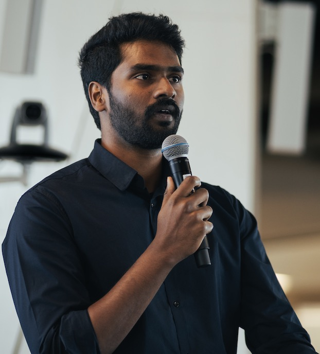

I'm an Applied Scientist at Amazon in Seattle, working on identity-preserving generative image editing. Previously, I was a Senior Software Engineer at Qualcomm, where I accelerated neural network inference on Snapdragon chipsets. Before that, I was a Lead Engineer at Samsung R&D, where I designed the first-ever moiré image restoration CNN for smartphones, commercialized in Galaxy S22.
I received my M.S. in Computer Science from Northeastern University (GPA: 4.0) and my B.Tech. in ECE from NIT Warangal. During my masters, I worked as a Graduate Research Assistant with Prof. Michael Wan, publishing work in CVPR-W and MICCAI-W.
I'm interested in computer vision, deep learning, computational photography, and generative AI.
Languages: C++, Python, Java, MATLAB
ML Frameworks: PyTorch, TensorFlow, Caffe, ONNX, OpenCL